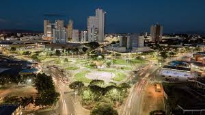
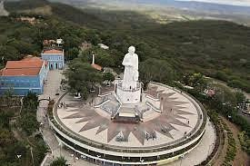
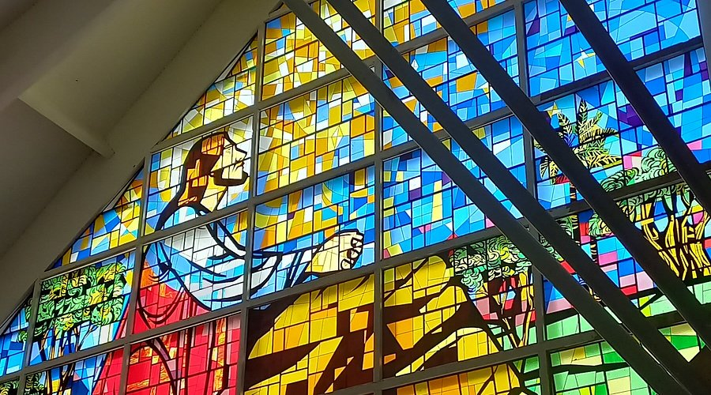

JUAZEIRO DO NORTE-CE

Dados
Juazeiro do Norte é um município brasileiro do estado do Ceará. Localiza-se na Região Metropolitana do Cariri, no sul do estado,
distante 491 km da capital, Fortaleza, a uma altitude de 377 metros acima do nível do mar
Localização
Juazeiro do Norte é um município brasileiro do estado do Ceará. Localiza-se na Região Metropolitana
do Cariri, no sul do estado, distante 491 km da capital, Fortaleza, a uma altitude de 377 metros acima do nível do mar
Pontos turisticos
MUSEU VIVO DE MEU PADRE CÍCERO

Endereço:
R. São José, 242 - Salgadinho, 63011-038
IGREJA BOM JESUS DO HORTO

Endereço: Horto, Juazeiro do Norte - CE
TELESFÉRICO
Endereço: Estátua do Padre Cícero na colina do Horto - Horto, Juazeiro do Norte - CE
buscar por hospedagens
Juazeiro do Norte era inicialmente um distrito da cidade vizinha Crato, até que o jovem Padre Cícero Romão Batista resolveu se fixar como pároco no lugarejo, até então sem capelão e,
portanto, sem os serviços religiosos. Padre Cícero foi um dos responsáveis, tempos depois, pela emancipação e independência da cidade.